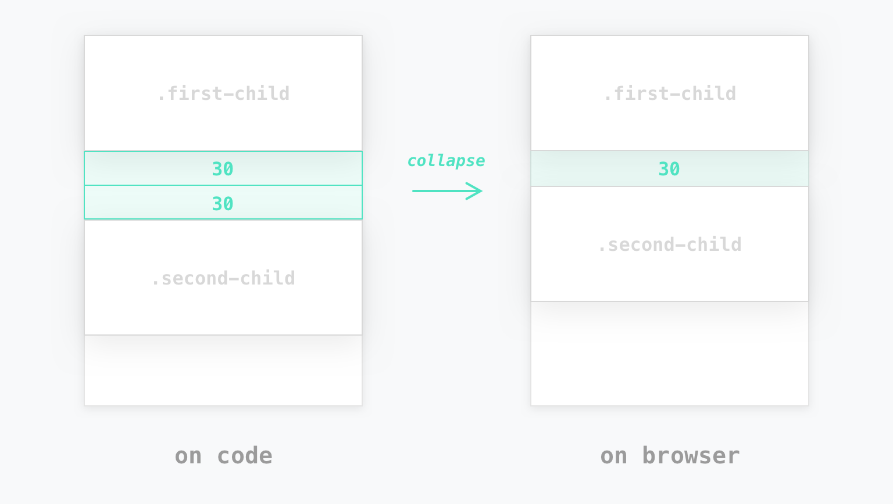
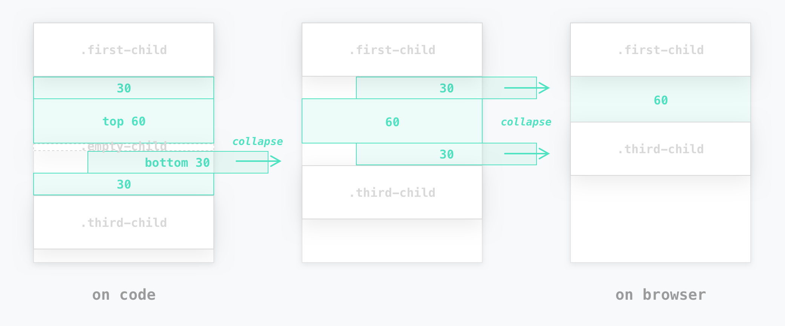

raram2 / 2022.06.28

흔히 마진 겹침 현상이라고도 불립니다. (혹자는 '마진 빡침 현상'이라고도 합니다) 하지만 인과관계로 볼 때, 마진이 겹치게 되면 상쇄가 일어나기 때문에 영미권에서는 '마진 상쇄(Margin collapsing)'로 부르고 있습니다. 다음은 MDN 및 W3C의 마진 상쇄에 대한 설명입니다.
"블록의 top 및 bottom 마진은 때로는 (결합되는 마진 중 크기가) 가장 큰 한 마진으로 결합(combine, 상쇄(collapsed))됩니다, 마진 상쇄(margin collapsing)로 알려진 행동 - MDN"
"In CSS, the adjoining margins of two or more boxes (which might or might not be siblings) can combine to form a single margin. Margins that combine this way are said to collapse, and the resulting combined margin is called a collapsed margin. - W3C"
쉽게 말해, 마진 상쇄는 어떤 두 개 이상 블록 요소의 상하 마진이 겹칠 때 어느 한 쪽의 값만 적용하는 브라우저 나름의 렌더링 규칙 정도로 이해하면 될 것 같습니다.
여기서부터는 블록(block) 요소를 편의상 박스라고 부르겠습니다.
겹쳐진 두 마진 값을 비교해, 더 큰 마진 값으로 상쇄해 렌더링합니다. 만약 겹쳐진 두 값이 동일할 경우, 중복을 상쇄해 렌더링합니다.
'빈 요소' 란 높이(height)가 0인 상태의 블록 요소를 말합니다.
height / min-height / padding / border 등 상하로 늘어나는 프로퍼티 값을 명시적으로 주지 않았거나, 내부에 Inline 콘텐츠가 존재하지 않는 요소
이 경우 위와 아래를 가르는 경계가 없으므로, 자신의 상단 마진의 값과 하단 마진의 값을 비교해 더 큰 값으로 상쇄합니다. 만약 겹쳐진 두 값이 동일할 경우, 중복을 상쇄합니다. 특히 빈 요소와 인접 박스들 간에 마진 겹침이 일어나는 구조에서는 다음과 같이 상쇄가 여러 번 발생하게 됩니다.
"그럼 빈 요소를 안 만들면 되지 않나?"라고 생각하실지도 모르겠습니다. 하지만 마크업을 진행하다 보면 생각보다 많은 경우에 빈 요소를 만들어놓게 됩니다.
빠른 레이아웃 구성을 위해 div로 영역을 만들어 놓을 경우
내부에 요소를 append 하기 위해 빈 컨테이너를 만들어 놓을 경우 등
height, padding, border 등 높이와 관련된 속성들은 상위로부터 상속되지 않기 때문에, 위의 경우들을 위해서라도 꼭 인지해야 할 부분이라 생각합니다.